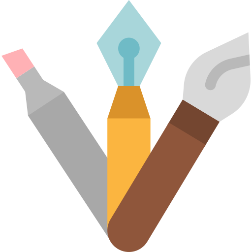

<ion-header>
  <ion-navbar>
    <ion-title>
      Serviços
    </ion-title>
  </ion-navbar>
</ion-header>

<ion-content class="has-header" padding="true">
   <ion-list>
    <button ion-item (click)="abrepagina('Alimentos')" clear>
      <ion-thumbnail item-start>
        
      </ion-thumbnail>
      <h2>Alimentos</h2>
      <p>{{qntA}} projetos ativos></p>
    </button>
    <button ion-item (click)="abrepagina('Profissionais')" clear>
      <ion-thumbnail item-start>
        
      </ion-thumbnail>
      <h2>Profissionais</h2>
      <p>{{qntP}} projetos ativos></p>
    </button>
    <button ion-item (click)="abrepagina('Saudeebeleza')" clear>
      <ion-thumbnail item-start>
        
      </ion-thumbnail>
      <h2 danger>Saúde &amp; Beleza</h2>
      <p>{{qnt}} projetos ativos></p>
    </button>
    <button ion-item (click)="abrepagina('Arteemanufatura')" clear>
      <ion-thumbnail item-start>
        
      </ion-thumbnail>
      <h2>Arte &amp; Manufatura</h2>
      <p>{{qnt}} projetos ativos></p>
    </button>
    <button ion-item (click)="abrepagina('Outros')" clear>
      <ion-thumbnail item-start>
        
      </ion-thumbnail>
      <h2>Outros</h2>
      <p>{{qnt}} projetos ativos></p>
    </button>

  </ion-list>
  <ion-fab bottom right>
    <button ion-fab mini (click)="cadastraServico()">
      <ion-icon name="add"></ion-icon>
    </button>
    </ion-fab>

</ion-content>
